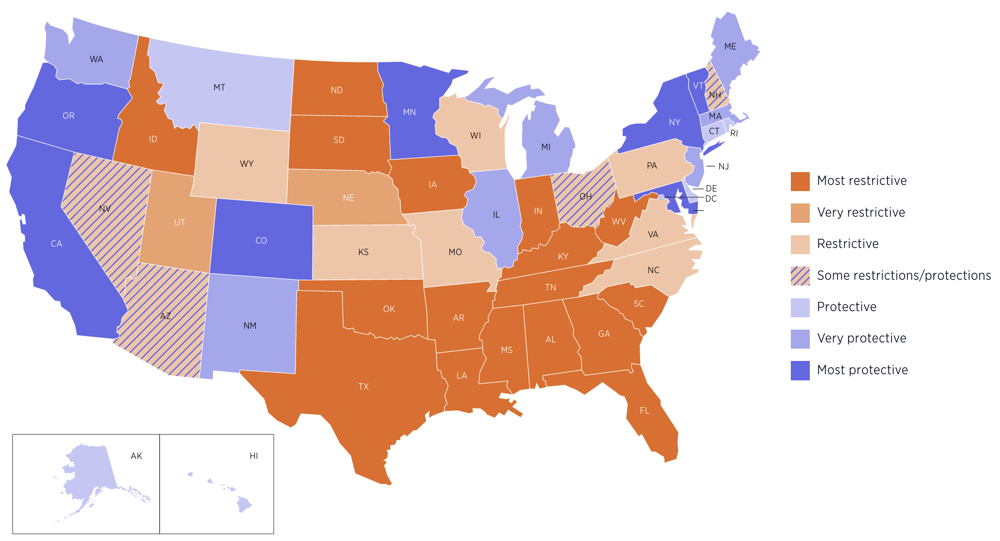
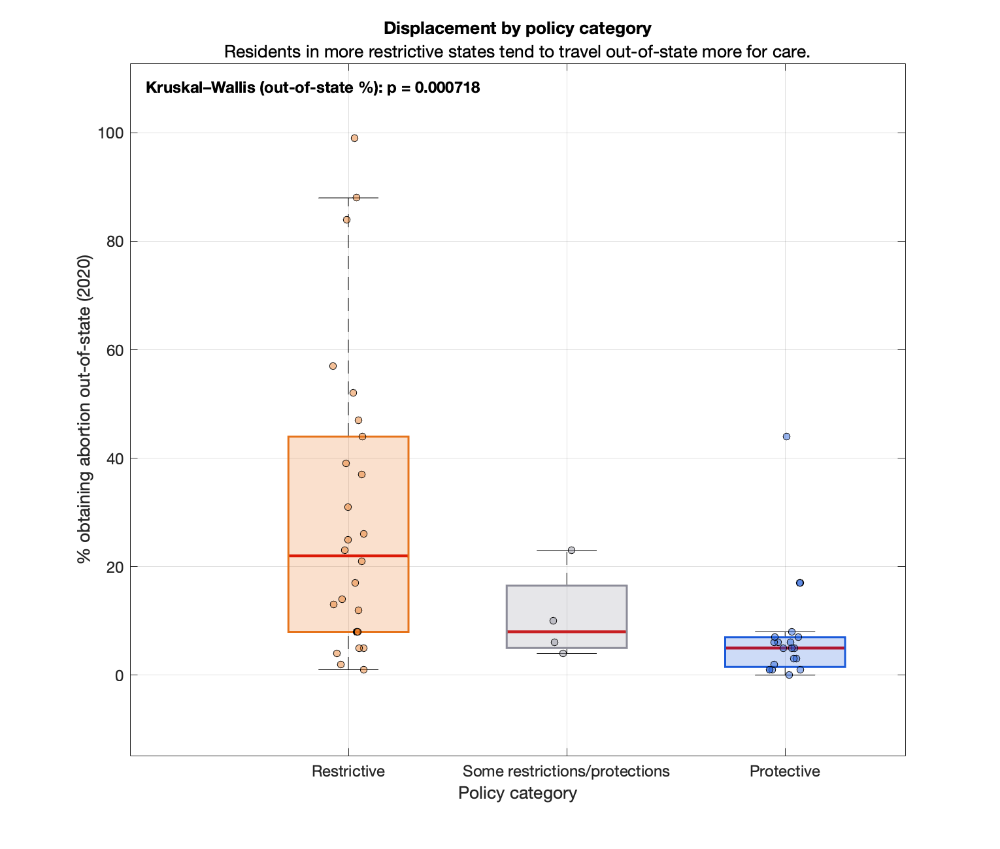
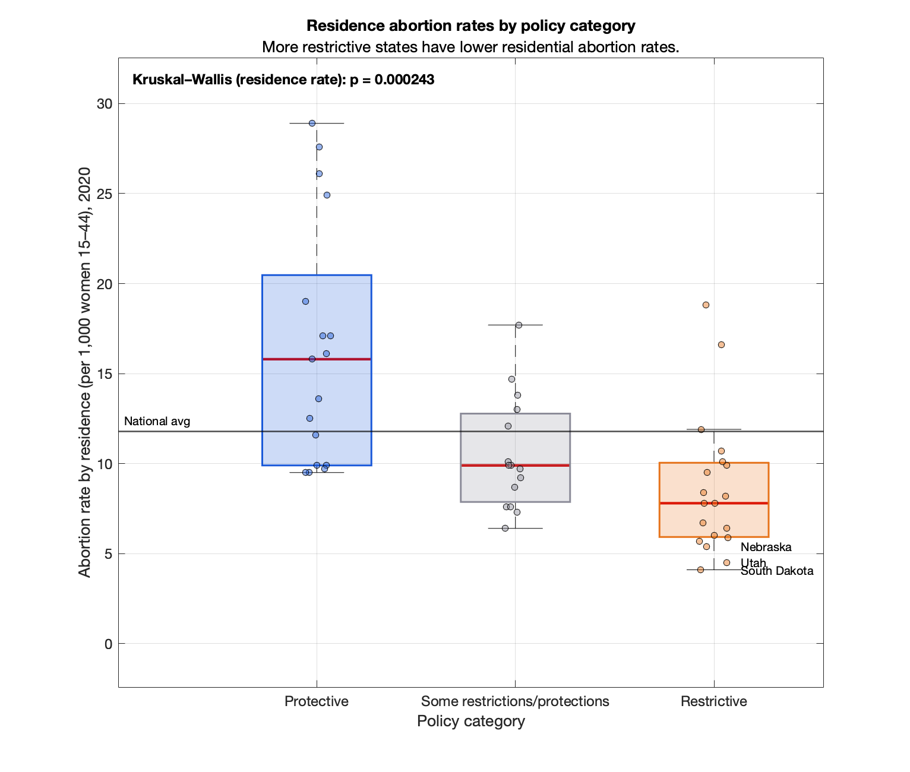

Proposition: Restrictive abortion laws shift abortions out of state rather than reducing them.
Preview Notes

This map provides the structural policy context underlying the subsequent statistical comparisons, visually highlighting the pronounced regional clustering of restrictive regimes in the South and protective regimes along the West Coast and Northeast. The geographic polarization shown here motivates the central question of the analysis: whether these sharply differentiated legal environments correspond to measurable differences in cross-state travel and abortion incidence. I categorized each state based on this map (noting that the policy classification reflects 2026 conditions while the abortion data are from 2020) in order to examine whether states situated within more restrictive legal environments exhibit systematically different travel patterns or resident abortion rates compared to states classified as protective. While the temporal mismatch introduces limitations, the categorization provides a clear structural framework for testing whether policy environment is associated with displacement or incidence differences across states.
FOR the Proposition: Restrictions do not eliminate abortions, they displace them.

Design Decisions and Rationale:
-
Collapse policy into three bins (Restrictive / Some restrictions-protections / Protective). Score: +0.5
The original map presents a seven-tier classification (most restrictive to most protective). Some tiers contain only a handful of states, which increases sampling variability and makes distributional comparisons visually unstable. Collapsing into three bins increases within-group sample size and stabilizes median estimates. From a perceptual standpoint, viewers process three categories far more easily than five to seven. A three-bin system creates a clean, interpretable policy spectrum: restrictive to middle to protective. How the categories were made required some decision making, ending up with the following to fit the proposition better.Restrictive = Most restrictive + Very restrictive + Restrictive Middle = Some restrictions/protections Protective = Protective + Very protective + Most protective
-
Exclude DC from the displacement figure to avoid scale domination. Score: +1
DC was an outlier (very high access, very unusual jurisdiction size). I excluded it from the data because it did not help this proposition's case and also because it is technically not a state. Excluding it makes the plot more interpretable and prevents one point from anchoring the viewer's impression. The downside is that removing a salient protective case can be perceived as cherry-picking. -
Add a Kruskal-Wallis p-value annotation and a careful, non-causal subtitle. Score: +1.5
The p-value adds inferential credibility by signaling the group differences are unlikely to be purely noise, and the subtitle frames the result as an association rather than a causal claim. This combination is persuasive because it increases confidence while avoiding overclaiming. An alternative was to omit inferential statistics (cleaner graphic), but that makes it easier for a skeptical reader to dismiss the result as descriptive pattern-finding.
AGAINST the Proposition: Restrictions reduce abortions overall, not just re-route them.

Design Decisions and Rationale:
-
Use abortion rate by residence (per 1,000 women 15-44) rather than occurrence. Score: +2
Residence rates address incidence among residents, which is the correct quantity for testing "restrictions reduce abortions" rather than merely moving them. This is persuasive for the counter-argument because it removes inflow bias that would inflate protective hub states. I considered using counts, but those confound population size; rates are more defensible. -
Group policy strength differently than For the Proposition. Score: -1.5
Restrictive = Most restrictive + Very restrictive Middle = Restrictive + Some + Protective Protective = Very protective + Most protective
The purpose of the second figure is to test whether extreme restriction corresponds to lower residence abortion rates. To emphasize this test, I isolated only the most extreme restrictive states in the Restrictive bin. States that are moderately restrictive were moved into the middle group. This binning sharpens contrast between the most polarized policy environments. It intentionally tests whether the strongest legal regimes correspond to the largest differences in incidence. The category restructuring is defensible because it isolates extremes, but it is also asymmetrical relative to the pro figure. -
Force category order to start with Protective (leftmost) and end with Restrictive (rightmost). Score: +0.5
Left-to-right ordering cues a narrative gradient (from access to restriction) and makes the viewer naturally compare endpoints. It is mildly persuasive because ordering affects how quickly the viewer infers directionality, even though the underlying data are unchanged. The alternative was to order by medians (stronger rhetorical effect), but that can be criticized as letting the data choose the story; here the order is conceptually defined. -
Add a national-average reference line. Score: -1
The reference line anchors interpretation: readers can immediately judge whether each category sits above or below a meaningful baseline. This works especially well here because the blue group sits above the line while the other groups sit below it, so the viewer can quickly see a directional contrast without reading exact values. That visual split helps readers infer the intended takeaway that as policy becomes more restrictive, incidence is lower. I considered showing confidence intervals for the mean instead, but that adds complexity and draws attention away from category comparisons. -
Label a few lowest-rate states within the Restrictive group. Score: -0.5
This is intentionally persuasive and somewhat selective: it spotlights exemplars that reinforce the restrictions reduce incidence narrative. It works well for storytelling and memorability, but it risks cherry-picking because unlabeled points may contradict the implied pattern. Alternatives were labeling median states (more neutral) or labeling both low and high restrictive outliers (more balanced); I chose low-only because the figure's role is explicitly the con argument.
Final Reflection
One deliberate constraint I imposed was using boxplots for both figures. This functioned as a methodological control: the same summary statistic (median), the same distributional representation (IQR), and the same swarm overlay of individual states were used in each case. By holding the graphical form constant, I limited the extent to which visual encoding itself could bias interpretation. Using a mean-bar chart for one argument and a boxplot for the other would have introduced asymmetry in statistical emphasis. Standardizing the format ensured that differences in persuasion stemmed primarily from conceptual framing rather than graphical manipulation, which increased fairness across arguments and reduced overt deception. Across both visualizations, the most straightforward part of the process was selecting outcome measures that directly matched the mechanisms being tested: percent obtaining abortions out of state for displacement, and abortion rate by residence for incidence. Those choices felt analytically grounded and defensible. What proved more difficult, and more revealing, was recognizing how much interpretive weight rests on categorization, ordering, and framing rather than on the raw data themselves. I liked how modest structural changes, such as collapsing tiers differently or adding a reference line, could noticeably shift the strength of the narrative without altering any underlying values.
At the same time, the assignment made clear that persuasion often operates at the level of categorization and grouping. The most consequential choices were not color schemes or axis limits, but how policy tiers were collapsed and defined differently across the two figures. In the for figure, collapsing into three broad bins emphasized systemic polarization and stabilized medians. In the against figure, isolating the most extreme restrictive states sharpened contrast and amplified endpoint separation. Both approaches are defensible, yet the asymmetry illustrates how grouping logic can subtly privilege one interpretation over another. That decision was rhetorically powerful precisely because it reshaped the comparison structure. Also, excluding DC from one figure but not the other highlights a tension between interpretability and perceived neutrality. Removing outliers can improve clarity, yet it can also appear strategic. In this case, I attempted balance by retaining DC in the incidence analysis. The experience reinforced that transparency about exclusions is essential when visualizations support contested claims.